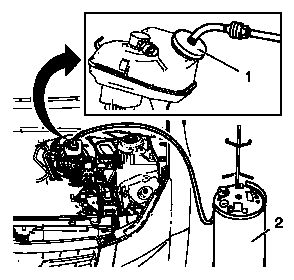

液压制动系统的排气
警告：
有关制动液刺激性的警告
告诫：
有关制动液对油漆和电气部件影响的告诫
1.
将清洁的抹布放在制动总泵下方以防止制动液溢出。
2.
当点火开关置于OFF（关闭）位置且制动器处于冷态时，踩下制动踏板3-5次，或直到制动踏板力明显增大，以耗尽制动助力器储备的能量。
3.
如果已经在车上执行了制动总泵台钳排气程序，或从总泵上断开了制动管，或从比例阀总成或制动调制器总成断开了制动管，则必须执行以下步骤以便在液压部件孔口排出空气：
注意:
如果必须拆下储液罐盖和膜片，则在拆卸前清洁罐盖上面及周围的储液罐外侧表面。
3.1
确保制动总泵储液罐已被加注至最满位置。必要时，从清洁的、密封的制动液容器中添加新的制动液。
粘合剂、油液、润滑剂和密封胶
注意:
对于制动压力调节阀，按系统流程图中给定的顺序执行这些步骤。从来自总泵的供液管开始。
3.2
在制动管牢固地安装至总泵、制动压力调节阀时，从部件的孔口松开制动管之一并将其拆下。
3.3
让少量制动液在重力作用下从部件开口处流出。
3.4
将制动管重新连接至部件孔口并牢固紧固。
3.5
让助手缓慢地将制动踏板踩到底，并在踏板上保持稳定的压力。
3.6
松开该制动管，以便从部件打开的孔口处排出空气。
3.7
紧固制动管，然后让助手缓慢地松开制动踏板。
3.8
等待15秒，然后重复步骤3.3-3.7，直到从总泵的同一端口处排出所有空气。
3.9
在前制动管牢固地安装至总泵、比例阀总成或制动调制器总成时，在所有的空气从部件的第一个孔口排出后，从部件上松开下一个制动管并将其拆下，然后重复步骤3.3-3.8，直到部件的每个孔口都已排气。
3.10
在完成最后的部件孔口排气程序后，确保每个制动管至部件的接头都正确紧固。
注意:
在拆下储液罐盖和膜片前，清洁储液罐上及盖周围的外侧表面。
4.
用存放在清洁的、密封的制动液容器中的制动液，加注制动总泵储液罐至最满位置。
粘合剂、油液、润滑剂和密封胶
5.
拆下制动总泵储液罐盖。

6.
将传统制动器排气适配器 (1) 安装至制动总泵储液罐。
7.
检查传统制动器压力排气器 (2) 中的制动液液位。如有必要，加注清洁的、密封的制动液容器中新的制动液，使液位大约达到半满位置。
粘合剂、油液、润滑剂和密封胶
8.
将传统制动器压力排气器 (2) 连接至制动器压力排气器适配器 (1)。
9.
将制动器压力排气器气罐加压至175-205 千帕（25-30 磅力/平方英寸）。
10.
打开传统制动器压力排气器 (2) 或同等工具的储液灌阀，使加压的制动液流入制动系统。
注意:
如果发现制动液泄漏，则需要在完成本程序前修理。
11.
等待约30秒，然后检查整个液压制动系统，确保不存在制动液外部泄漏。
12.
将合适的方头扳手安装至右后车轮液压回路放气阀上。
13.
将透明软管安装至放气阀端口。
14.
将透明软管的开口端浸入透明容器中，该容器部分加注了来自清洁的、密封的制动液容器中新的制动液。
粘合剂、油液、润滑剂和密封胶
15.
松开放气阀，排出车轮液压回路中的空气。让制动液流动，直到放气装置不再放出气泡，然后拧紧放气阀。
16.
牢牢紧固右后车轮液压回路放气阀，从右后液压回路中放出所有空气后，将适当的方头扳手安装到左前车轮液压回路放气阀上。
17.
将透明软管安装至放气阀端，然后重复步骤13-14。
18.
牢牢紧固左前车轮液压回路放气阀，从左前液压回路中放出所有空气后，将适当的方头扳手安装到左后车轮液压回路放气阀上。
19.
将透明软管安装至放气阀端，然后重复步骤13-14。
20.
牢牢紧固左后车轮液压回路放气阀，从左后液压回路中放出所有空气后，将适当的方头扳手安装到右前车轮液压回路放气阀上。
21.
将透明软管安装至放气阀端，然后重复步骤13-14。
22.
在完成最后一个车轮液压回路放气程序后，确保4个车轮液压回路放气阀都被正确紧固。
23.
关闭传统制动器压力排气器储液罐阀，然后将排气器 (2) 从排气器适配器 (1) 断开。
24.
将传统制动器压力排气器适配器 (1) 从制动总泵储液罐上拆下。
25.
安装制动总泵储液罐盖。
26.
用存放在清洁的、密封的制动液容器中的新制动液，加注制动总泵储液罐至最满位置。
粘合剂、油液、润滑剂和密封胶
27.
缓慢地踩下并松开制动踏板。注意制动踏板感觉。
28.
如果制动踏板感觉绵软，则执行如下步骤：
28.1
检查制动系统是否存在外部泄漏。
制动系统外部泄漏的检查
28.2
如装备了防抱死制动系统，则使用故障诊断仪，执行防抱死制动系统自动排气程序，以清除制动压力调节阀中可能夹带的所有空气。
注意:
如果制动系统警告灯保持点亮，则禁止车辆行驶，直到对其完成诊断和修理。
29.
在发动机关闭的情况下，将点火开关置于ON（打开）位置。查看制动系统警告灯是否保持点亮。
30.
如果制动系统警告灯保持点亮，则参见
症状－液压制动器
。